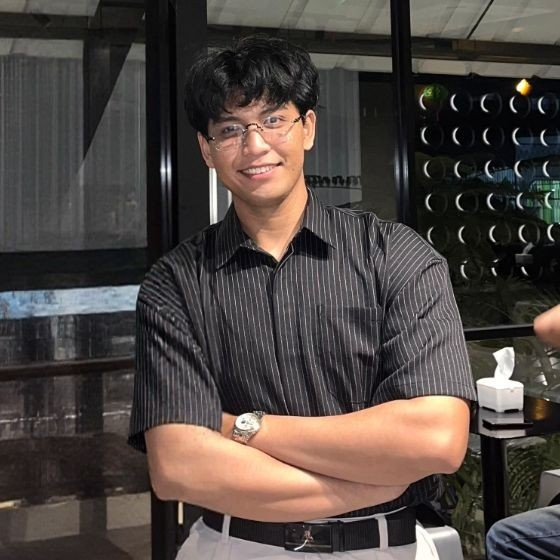

Memiliki minat besar pada pengembangan teknologi, inovasi digital, dan pemanfaatan teknologi informasi untuk menyelesaikan berbagai permasalahan secara efektif.

Saya adalah individu yang memiliki minat besar pada pengembangan teknologi, inovasi digital, dan pemanfaatan teknologi informasi untuk menyelesaikan berbagai permasalahan secara efektif. Dengan latar belakang pendidikan di bidang teknologi dan pengalaman dalam berbagai proyek digital, saya terbiasa bekerja secara sistematis, analitis, dan berorientasi pada solusi.
Saya memiliki ketertarikan pada pengembangan sistem informasi, analisis data, serta implementasi teknologi dalam berbagai bidang. Selain itu, saya juga terus mengembangkan kemampuan dalam memahami kebutuhan pengguna serta menerjemahkannya menjadi solusi teknologi yang praktis dan efisien.
Melalui berbagai pengalaman belajar dan proyek yang saya kerjakan, saya berusaha untuk terus meningkatkan kompetensi profesional serta memberikan kontribusi nyata dalam pengembangan teknologi digital.
Berikut beberapa kemampuan yang saya miliki, yang terus saya kembangkan melalui pengalaman belajar, proyek pribadi, dan kolaborasi tim:
Pengembangan & manajemen sistem informasi
Analisis data & pengolahan informasi
HTML, CSS, JavaScript
Perancangan UI/UX dasar
Pemecahan masalah & analisis sistem
Manajemen proyek digital
Kerja sama tim & komunikasi profesional
Setiap proyek yang saya kerjakan berfokus pada penerapan teknologi secara praktis serta menghasilkan solusi yang dapat digunakan secara nyata.
Pengembangan website portfolio sebagai media untuk menampilkan profil profesional, pengalaman, serta karya yang telah dibuat.
Perancangan dan pengembangan website menggunakan teknologi web modern dengan fokus pada tampilan responsif dan pengalaman pengguna.
Pengembangan sistem informasi sederhana yang membantu pengelolaan data dan meningkatkan efisiensi proses kerja.
Jika Anda tertarik untuk berdiskusi, bekerja sama, atau ingin mengetahui lebih lanjut mengenai proyek yang saya kerjakan, silakan hubungi saya melalui: